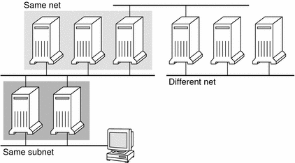

Previous
Previous
Autofs Mount Process
What the autofs service does when a mount request is triggered depends on how the automounter maps are configured. The mount process is generally the same for all mounts. However, the final result changes with the mount point that is specified and the complexity of the maps. Starting with the Solaris 2.6 release, the mount process has also been changed to include the creation of the trigger nodes.
Simple Autofs Mount
To help explain the autofs mount process, assume that the following files are installed.
$ cat /etc/auto_master # Master map for automounter # +auto_master /net -hosts -nosuid,nobrowse /home auto_home -nobrowse /share auto_share $ cat /etc/auto_share # share directory map for automounter # ws gumbo:/export/share/ws
When the /share directory is accessed, the autofs service creates a trigger node for /share/ws, which is an entry in /etc/mnttab that resembles the following entry:
-hosts /share/ws autofs nosuid,nobrowse,ignore,nest,dev=###
When the /share/ws directory is accessed, the autofs service completes the process with these steps:
Checks the availability of the server's mount service.
Mounts the requested file system under /share. Now the /etc/mnttab file contains the following entries.
-hosts /share/ws autofs nosuid,nobrowse,ignore,nest,dev=### gumbo:/export/share/ws /share/ws nfs nosuid,dev=#### #####
Hierarchical Mounting
When multiple layers are defined in the automounter files, the mount process becomes more complex. Suppose that you expand the /etc/auto_shared file from the previous example to contain the following:
# share directory map for automounter
#
ws / gumbo:/export/share/ws
/usr gumbo:/export/share/ws/usrThe mount process is basically the same as the previous example when the /share/ws mount point is accessed. In addition, a trigger node to the next level (/usr) is created in the /share/ws file system so that the next level can be mounted if it is accessed. In this example, /export/share/ws/usr must exist on the NFS server for the trigger node to be created.
Caution - Do not use the -soft option when specifying hierarchical layers. Refer to Autofs Unmounting for an explanation of this limitation.
Autofs Unmounting
The unmounting that occurs after a certain amount of idle time is from the bottom up (reverse order of mounting). If one of the directories at a higher level in the hierarchy is busy, only file systems below that directory are unmounted. During the unmounting process, any trigger nodes are removed and then the file system is unmounted. If the file system is busy, the unmount fails and the trigger nodes are reinstalled.
Caution - Do not use the -soft option when specifying hierarchical layers. If the -soft option is used, requests to reinstall the trigger nodes can time out. The failure to reinstall the trigger nodes leaves no access to the next level of mounts. The only way to clear this problem is to have the automounter unmount all of the components in the hierarchy. The automounter can complete the unmounting either by waiting for the file systems to be automatically unmounted or by rebooting the system.
How Autofs Selects the Nearest Read-Only Files for Clients (Multiple Locations)
The example direct map contains the following:
/usr/local -ro \
/bin ivy:/export/local/sun4\
/share ivy:/export/local/share\
/src ivy:/export/local/src
/usr/man -ro oak:/usr/man \
rose:/usr/man \
willow:/usr/man
/usr/games -ro peach:/usr/games
/usr/spool/news -ro pine:/usr/spool/news \
willow:/var/spool/news The mount points /usr/man and /usr/spool/news list more than one location, three locations for the first mount point, two locations for the second mount point. Any of the replicated locations can provide the same service to any user. This procedure is sensible only when you mount a file system that is read-only, as you must have some control over the locations of files that you write or modify. You want to avoid modifying files on one server on one occasion and, minutes later, modifying the “same” file on another server. The benefit is that the best available server is used automatically without any effort that is required by the user.
If the file systems are configured as replicas (see What Is a Replicated File System?), the clients have the advantage of using failover. Not only is the best server automatically determined, but if that server becomes unavailable, the client automatically uses the next-best server. Failover was first implemented in the Solaris 2.6 release.
An example of a good file system to configure as a replica is man pages. In a large network, more than one server can export the current set of man pages. Which server you mount the man pages from does not matter if the server is running and exporting its file systems. In the previous example, multiple mount locations are expressed as a list of mount locations in the map entry.
/usr/man -ro oak:/usr/man rose:/usr/man willow:/usr/man
In this example, you can mount the man pages from the servers oak, rose, or willow. Which server is best depends on a number of factors, including the following:
The number of servers that support a particular NFS protocol level
The proximity of the server
The weighting
During the sorting process, a count is taken of the number of servers that support each version of the NFS protocol. Whichever version of the protocol is supported on the most servers becomes the protocol that is used by default. This selection provides the client with the maximum number of servers to depend on.
After the largest subset of servers with the same version of the protocol is found, that server list is sorted by proximity. To determine proximity IPv4 addresses are inspected. The IPv4 addresses show which servers are in each subnet. Servers on a local subnet are given preference over servers on a remote subnet. Preference for the closest server reduces latency and network traffic.
Note - Proximity cannot be determined for replicas that are using IPv6 addresses.
Figure 6-5 illustrates server proximity.
Figure 6-5 Server ProximityIf several servers that support the same protocol are on the local subnet, the time to connect to each server is determined and the fastest server is used. The sorting can also be influenced by using weighting (see Autofs and Weighting).
For example, if version 4 servers are more abundant, version 4 becomes the protocol that is used by default. However, now the sorting process is more complex. Here are some examples of how the sorting process works:
Servers on the local subnet are given preference over servers on a remote subnet. So, if a version 3 server is on the local subnet and the closest version 4 server is on a remote subnet, the version 3 server is given preference. Likewise, if the local subnet consists of version 2 servers, they are given preference over remote subnets with version 3 and version 4 servers.
If the local subnet consists of a varied number of version 2, version 3, and version 4 servers, more sorting is required. The automounter prefers the highest version on the local subnet. In this instance, version 4 is the highest version. However, if the local subnet has more version 3 or version 2 servers than version 4 servers, the automounter “bids down” from the highest version on the local subnet by one version. For example, if the local subnet has three servers with version 4, three servers with version 3, and ten servers with version 2, a version 3 server is selected.
Similarly, if the local subnet consists of a varied number of version 2 and version 3 servers, the automounter first looks at the which version represents the highest version on the local subnet. Next, the automounter counts the number of servers that run each version. If the highest version on the local subnet also represents the most servers, the highest version is selected. If a lower version has more servers, the automounter bids down from the highest version on the local subnet by one version. For example, if more version 2 servers are on the local subnet than version 3 servers, a version 2 server is selected.
Note - Weighting is also influenced by keyword values in the /etc/default/nfs file. Specifically, values for NFS_SERVER_VERSMIN, NFS_CLIENT_VERSMIN, NFS_SERVER_VERSMAX, and NFS_CLIENT_VERSMAX can make some versions be excluded from the sorting process. For more information about these keywords, see Keywords for the /etc/default/nfs File.
With failover, the sorting is checked at mount time when a server is selected. Multiple locations are useful in an environment where individual servers might not export their file systems temporarily.
Failover is particularly useful in a large network with many subnets. Autofs chooses the appropriate server and is able to confine NFS network traffic to a segment of the local network. If a server has multiple network interfaces, you can list the host name that is associated with each network interface as if the interface were a separate server. Autofs selects the nearest interface to the client.
Note - No weighting and no proximity checks are performed with manual mounts. The mount command prioritizes the servers that are listed from left to right.
For more information, see automount(1M) man page.
Autofs and Weighting
You can influence the selection of servers at the same proximity level by adding a weighting value to the autofs map. For example:
/usr/man -ro oak,rose(1),willow(2):/usr/man
The numbers in parentheses indicate a weighting. Servers without a weighting have a value of zero and, therefore, are most likely to be selected. The higher the weighting value, the lower the chance that the server is selected.
Note - All other server selection factors are more important than weighting. Weighting is only considered when selecting between servers with the same network proximity.
Variables in a Map Entry
You can create a client-specific variable by prefixing a dollar sign ($) to its name. The variable helps you to accommodate different architecture types that are accessing the same file-system location. You can also use curly braces to delimit the name of the variable from appended letters or digits. Table 6-7 shows the predefined map variables.
Table 6-7 Predefined Map VariablesVariable | Meaning | Derived From | Example |
|---|---|---|---|
Architecture type | uname -m | sun4 | |
Processor type | uname -p | sparc | |
Host name | uname -n | dinky | |
Operating system name | uname -s | SunOS | |
Operating system release | uname -r | 5.8 | |
Operating system version (version of the release) | uname -v | GENERIC |
You can use variables anywhere in an entry line except as a key. For instance, suppose that you have a file server that exports binaries for SPARC and x86 architectures from /usr/local/bin/sparc and /usr/local/bin/x86 respectively. The clients can mount through a map entry such as the following:
/usr/local/bin -ro server:/usr/local/bin/$CPU
Now the same entry for all clients applies to all architectures.
Note - Most applications that are written for any of the sun4 architectures can run on all sun4 platforms. The -ARCH variable is hard-coded to sun4.